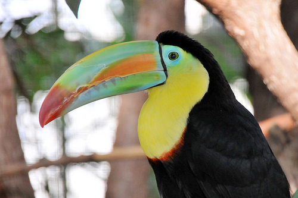
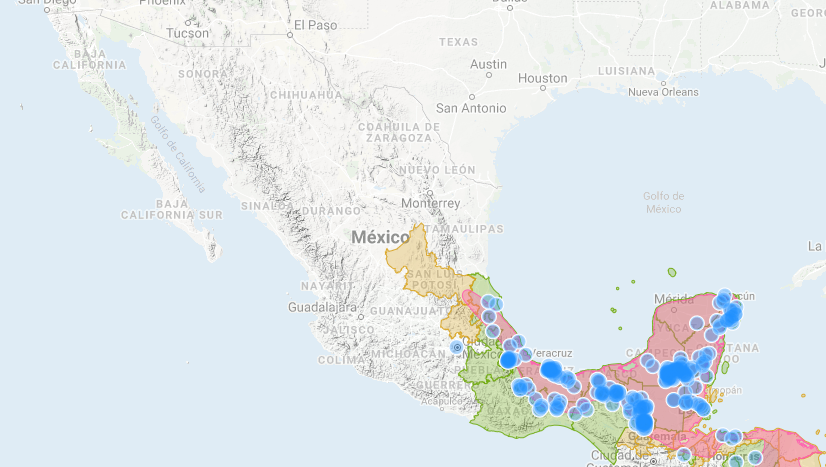

Descripción
La palabra Tucán viene del tupí-guaraní. Se refiere a un pájaro que tiene un pico de colores que es casi de igual tamaño que el cuerpo.
Es un ave de plumaje negro contrastado con el amarillo intenso del cuello y parte del pecho; posee un gran pico de 16 cm de largo. Su nombre se debe a que tiene un flamante pico
con los colores del arco iris. Son de cuerpo negro; en el macho el pico se presenta de mayor tamaño y su cuello y pecho son de color amarillo brillante. Se alimentan de frutas,
invertebrados y reptiles pequeños.
Miden entre 18 y 63 cm de largo, su cuerpo y su cuello son cortos, su cola dependiendo de la especie, mide casi la mitad hasta casi la totalidad de su cuerpo.
Los tucanes se alimentan de frutas, bayas, semillas, insectos, huevos y crías de aves, ranas y pequeños reptiles (como lagartijas y serpientes).

Hábitat
El tucán pico canoa está distribuido desde el sur de México hasta Venezuela y Colombia. Habitan en las copas de los árboles de bosques tropicales, subtropicales y selvas lluviosas
de tierras bajas, se les encuentra en alturas hasta de 1,900 m.

Situación actual
Chordata: Son un filo del reino animal caracterizado por la presencia de una cuerda dorsal o notocorda. Ramphastidae: Familia de aves ranfástidas del orden de los piciformes. Piciformes: Orden de aves neognatas formado por siete familias, en las que se incluyen los pájaros carpinteros, los tucanes y otras aves semejantes.
 Aves en peligro de extinción
Aves en peligro de extinción